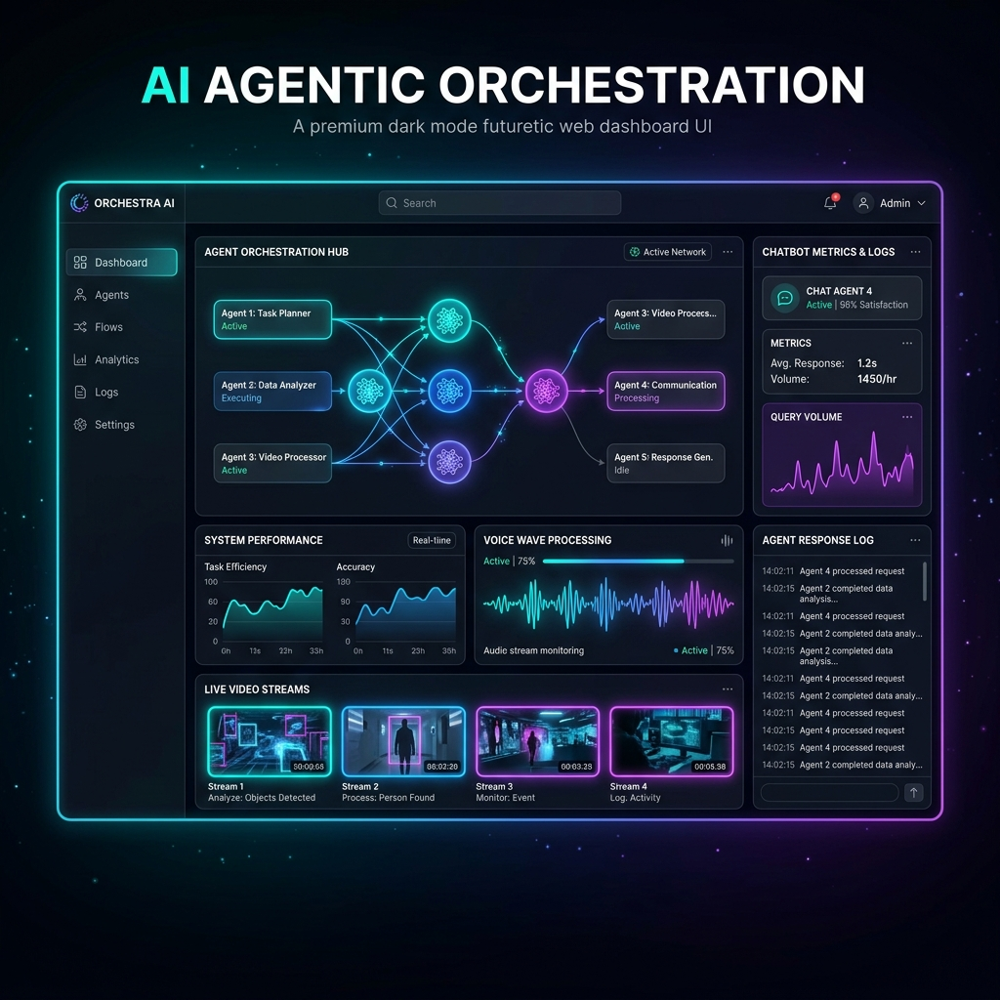
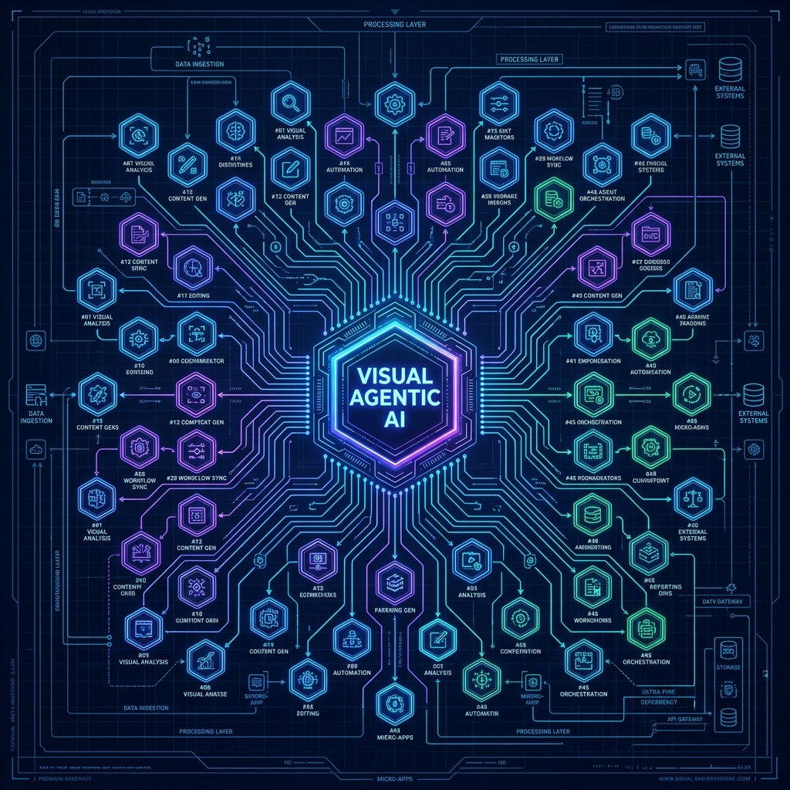

Visual Agentic AI
This Playbook Hub represents the VidiSmart blueprint: a highly integrated, self-managing mesh of AI agents and specialized interfaces. Rather than running 30 isolated micro-apps, our platform coordinates agents in voice, video, text chat, and Operations/HX workflows.
Unified Orchestration: Aligning voice, video, text, coding, and research agents under one hub.
Agent UI & Visualization: Real-time mapping, dashboard interfaces, and interactive twin previews.


VidiFlow: Visual Operating System
There is a massive difference between a Knowledge Architect drawing abstract diagrams on paper and building a Real Plan that drives real corporate value at scale. The latter is about execution, integration, and user adoption.
Our answer is VidiFlow: a visual agentic operating system that combines 50 disparate, siloed micro-applications into a single, synchronized hub.
We reject text-heavy walls of data. Endless raw logs create fatigue; humans need instant visual understanding through visual flow diagrams, interactive node metrics, and real-time media feeds.
Core Playbook Categories
Agentic Orchestration
Voice agents, video presenters, and conversational text bots working as a unified autonomous division.
Visual Content Creation
Generative image engines, design tooling pipelines, video sequence builders, and media players.
Coding & Automation
Automatic code gen, structure configuration schema tools, and search-engine index/markup optimization.
Research & Intelligence
Competitive tech stack analysis, market intelligence, and system verification databases to support strategic decisions.
Operations, HR & HX
Human Experience (HX) workflows where autonomous agents interface with internal teams and external customers.
Local AI & Model Inference
Dedicated local server hosting private LLMs & VLMs (via Ollama/vLLM) running offline inference and agent orchestration.
Private Knowledge Base & Post-Training
Local Vector Grounding, Node Semantics, and Company Fine-Tuning
PDF, DOCX, and text guides upgraded with vector embedding pipelines for high-accuracy local retrieval (RAG).
Images and video assets enriched with embedded metadata and visual descriptions for multi-modal context understanding.
Interconnected visual graph linking nodes, categories, and business rules together semantic relationships.
View Graph UIDedicated pipeline for custom company fine-tuning (LoRA/QLoRA) using local datasets separate from real-time inference.
Agent UI & Micro-App Consolidation
The visual interface that brings together all running micro-apps. Instead of running 30 disconnected dashboards, this is the main visualization layers for your live agents.